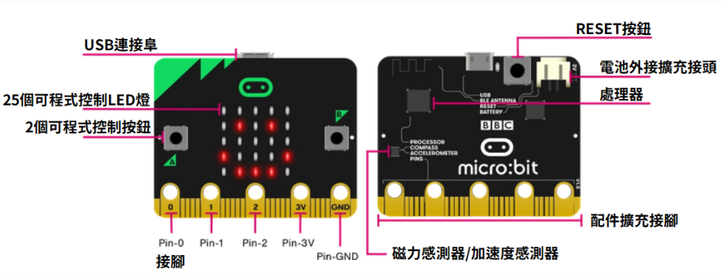
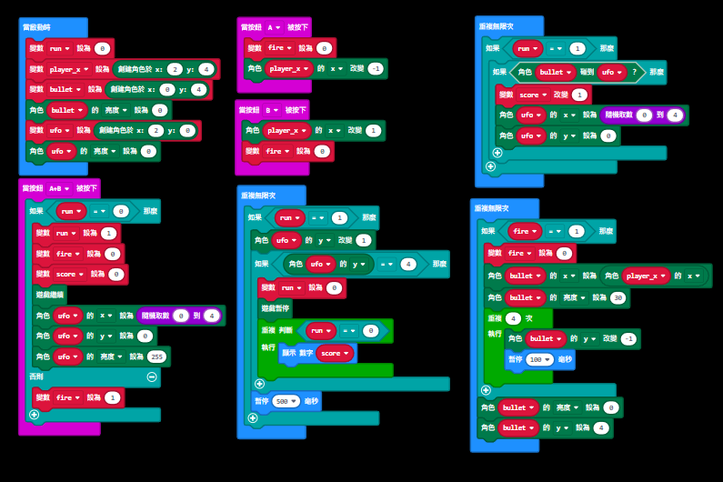
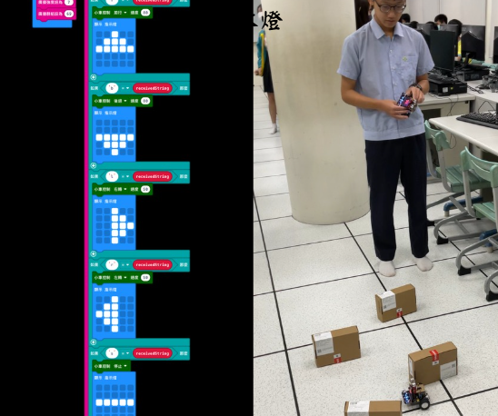
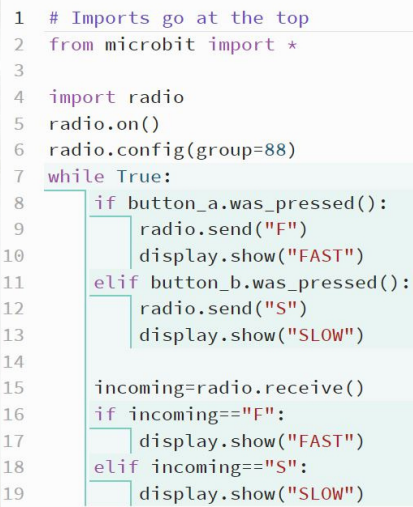
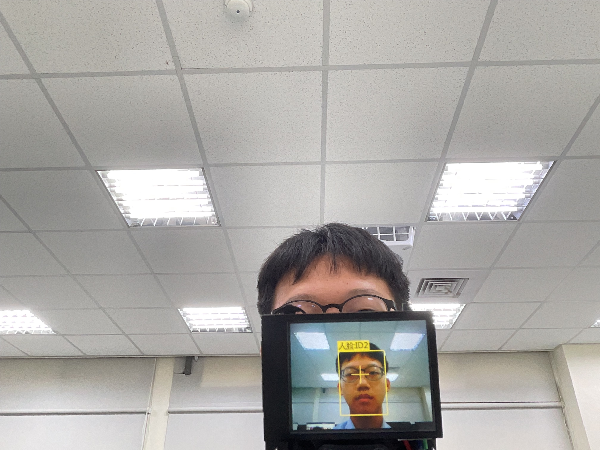

Micro:bit 硬體核心簡介
Micro:bit 是一台微型開發板，內建多種感測器，如加速度計、磁力計及溫度計，是學習物聯網與硬體控制的最佳核心組件。
無線通訊
藍牙與 RF 無線電廣播
輸入輸出
25 個外部接腳 GPIO

積木程式練習與邏輯開發

建立數位邏輯思維
透過 MakeCode 圖形化程式介面，我學習了如何處理事件驅動（Event-driven）的邏輯。藉由組合不同的功能塊，我能快速實踐如條件判斷與變數控制等程式核心概念。
擴充版極小車實體應用
實體機器人運動控制
將程式從電腦螢幕移向真實世界，我利用極小車擴充板控制直流馬達的轉速與方向。這不僅是程式碼的編寫，更涉及物理力學與空間判斷的整合。

Python 程式開發：無線遙控系統

文字式程式設計
從積木轉換到 Python 文字程式，我學會了如何透過 Radio 模組建立通訊群組。這讓機器人具備了「對話」的能力，實現了遠端控制與多機協作的可能性。
技術亮點
Radio 模組通訊、群組頻道配置
HuskyLens AI 機器視覺
AI 人臉辨識安防系統
整合視覺模組的人臉特徵提取技術，當識別到註冊人臉時，自動連動 Micro:bit 觸發警報與顯示通行圖示。

學習省思與未來展望
「AI 機器人課程讓我從一個程式碼的使用者，變成了問題的解決者。透過軟硬體的結合，我學會了如何定義目標、排除障礙，並將想像力轉化為現實。」
系統整合思維
理解不同硬體模組間的通訊協定，從全局視野思考產品開發流程。
實作 Debug 毅力
在多次嘗試與失敗中找到問題根源，磨練出面對未知挑戰的抗壓性。